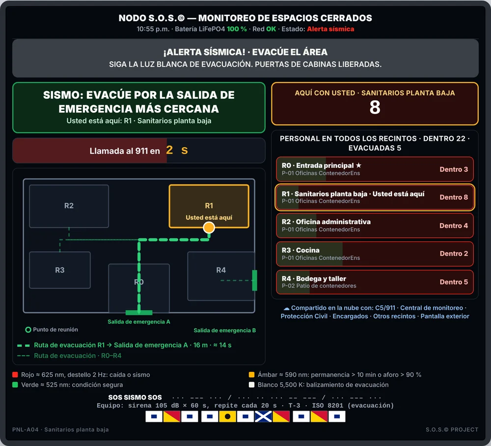
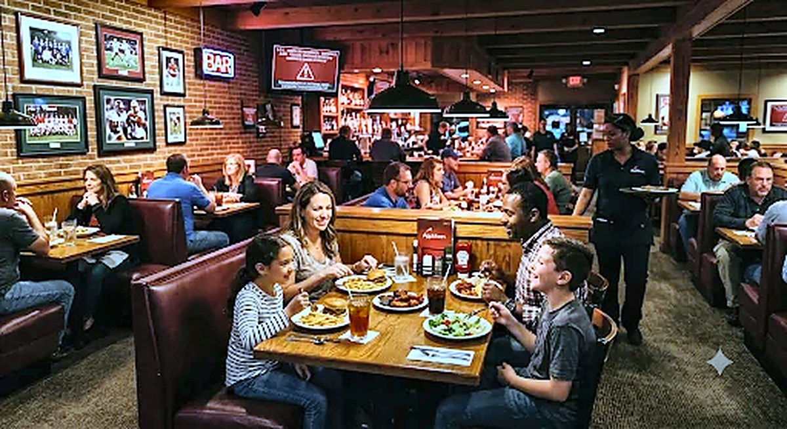
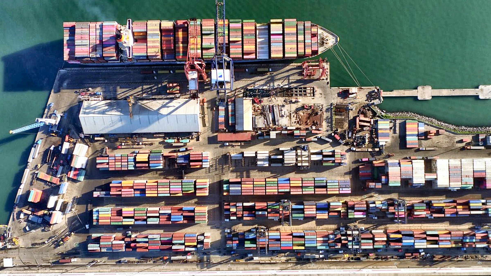
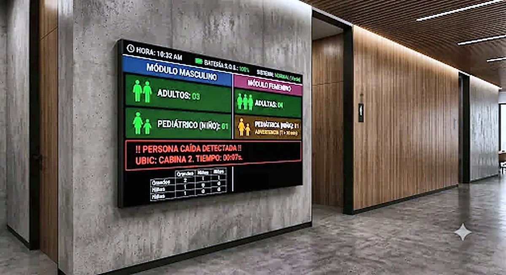
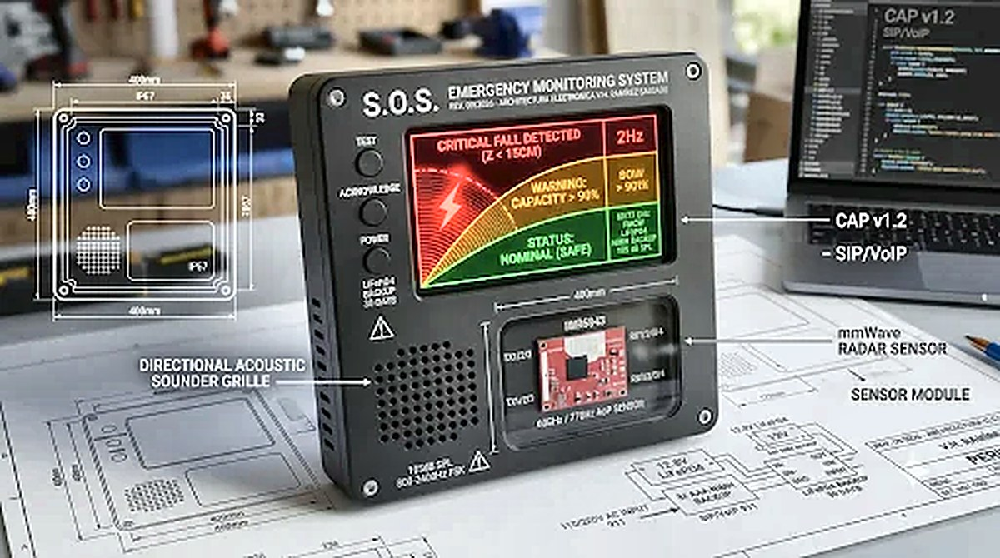

Seis ámbitos de aplicación, una sola red de alerta oportuna.

01 · DESASTRES
03 · AFOROS
04 · INDUSTRIA
05 · AUTORIDADES
06 · NORMATIVIDADTodo sistema tiene un margen de error. SOSistem™ trabaja de forma permanente para reducirlo al mínimo y ofrecer información lo más apegada a la realidad, en beneficio de las personas, los centros de trabajo y la comunidad.
Propuesta Beta · fotografías provisionales · © 2026 Víctor Hugo Ramírez Salgado. SOSistem™ · Sistema S.O.S.©